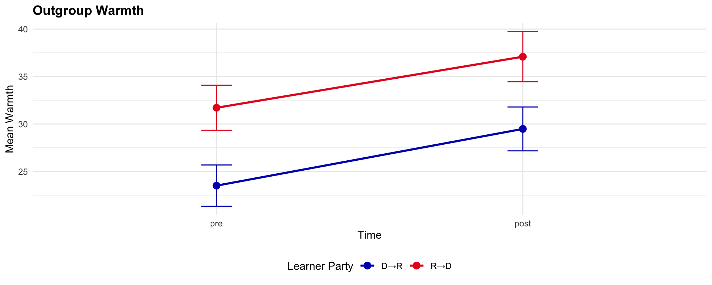
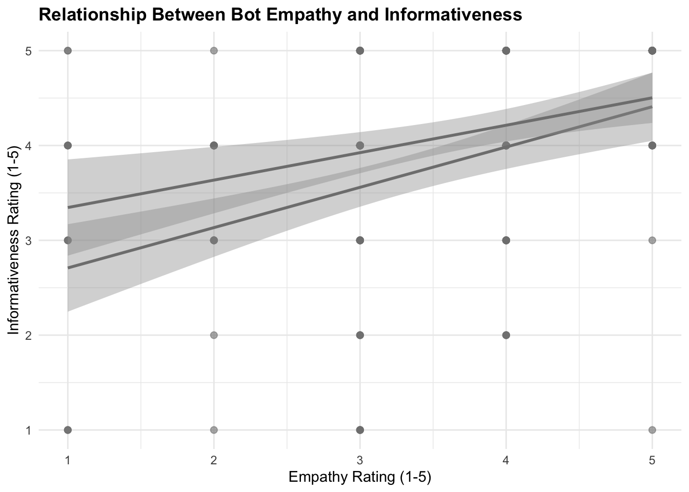
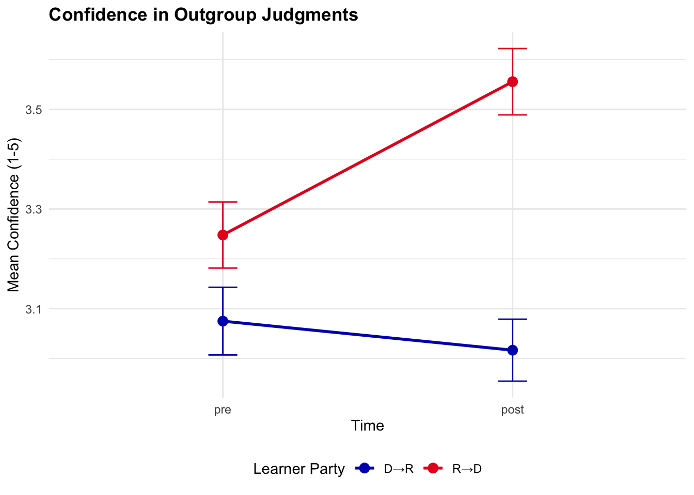
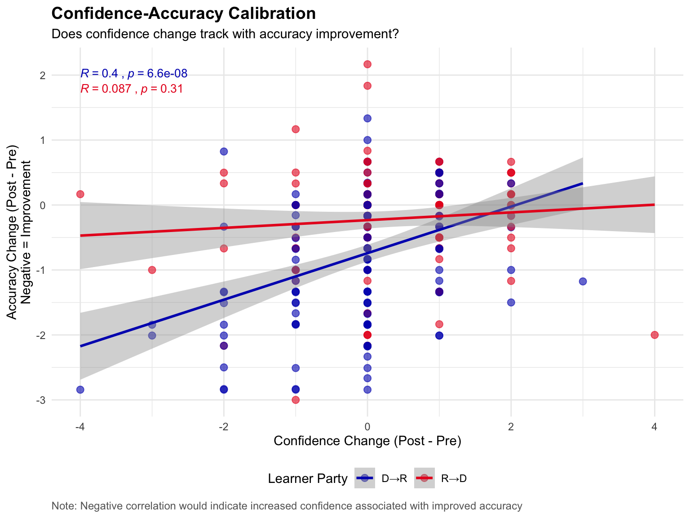

| Sample Composition | |
|---|---|
| Learner Party | N |
| D→R | 168 |
| R→D | 138 |
Learning from Twins: Can marketers learn about consumers across the political divide by interacting with AI
1 Overview
Political polarization creates challenges for marketers who must communicate effectively with ideologically diverse consumers. Misperceptions about political outgroups are widespread, with partisans often holding exaggerated and inaccurate views of those across the political divide. These misperceptions can lead to ineffective marketing strategies when firms attempt to appeal to broad consumer bases. This study tests whether interacting with an AI chatbot prompted to represent a political outgroup can improve marketers’ understanding of that outgroup and reduce affective polarization.
1.1 Hypotheses
We hypothesized that after interacting with an AI chatbot representing their political outgroup, participants would:
- Report more accurate beliefs about the outgroup’s attitudes toward environmentally responsible consumption (Primary Outcome 1).
- Feel warmer toward the political outgroup (Primary Outcome 2).
2 Data
2.1 Data Collection
Data were collected via Qualtrics from 306 participants. Participants self-reported their political orientation on a 0-100 slider scale, where values below 50 indicate Democratic leaning and values 50 and above indicate Republican leaning.
2.2 Measures
Primary Outcomes
- Belief accuracy: Absolute difference between participants’ estimates of outgroup green attitudes and actual outgroup means (lower = more accurate)
- Outgroup warmth: Feeling thermometer (0-100 scale) toward the political outgroup
Secondary Outcomes
- Confidence in outgroup judgments (5-point scale)
- Bot informativeness and empathy ratings (5-point scale)
2.3 Pre-Registered Analyses
For each primary outcome, we estimated mixed-effects models of the form:
\[y \sim \text{time} \times \text{learner\_party} + (1 | \text{id})\]
where time indexes pre- versus post-interaction measurement and learner_party indicates D→R versus R→D learning direction.
3 Results
3.1 Preliminaries
Democrats’ and Republicans’ actual green values and their perceptions of ingroup and outgroup attitudes.

3.2 Q1. Do people update their beliefs after interacting with the chatbot?
We examine whether participants changed their beliefs about the outgroup’s environmental attitudes from pre- to post-interaction, analyzing both accuracy and warmth.


| Accuracy | Warmth | |
|---|---|---|
| + p < 0.1, * p < 0.05, ** p < 0.01, *** p < 0.001 | ||
| Note: Accuracy is absolute error (lower = more accurate). * p<0.05, ** p<0.01, *** p<0.001 | ||
| (Intercept) | 1.363*** | 28.029*** |
| (0.050) | (1.456) | |
| timepost | -0.505*** | 4.912*** |
| (0.050) | (0.742) | |
| SD (Intercept ResponseId) | 0.607 | 23.759 |
| SD (Observations) | 0.625 | 9.173 |
| Num.Obs. | 612 | 612 |
3.3 Q2. Is belief updating symmetric across political groups?
The primary analyses above test whether Democrats and Republicans show different patterns of belief updating. The key test is the time × learner_party interaction in the mixed-effects models. A significant interaction would indicate asymmetric updating across groups.
| Accuracy | Warmth | |
|---|---|---|
| + p < 0.1, * p < 0.05, ** p < 0.01, *** p < 0.001 | ||
| Note: Accuracy is absolute error (lower = more accurate). * p<0.05, ** p<0.01, *** p<0.001 | ||
| (Intercept) | 1.872*** | 21.720*** |
| (0.058) | (1.896) | |
| timepost | -0.745*** | 5.131*** |
| (0.065) | (1.002) | |
| learner_partyR→D | -1.129*** | 13.990*** |
| (0.086) | (2.823) | |
| timepost × learner_partyR→D | 0.534*** | -0.486 |
| (0.097) | (1.493) | |
| SD (Intercept ResponseId) | 0.449 | 22.787 |
| SD (Observations) | 0.596 | 9.187 |
| Num.Obs. | 612 | 612 |
3.4 Q3. Does political extremity predict how much people update?
We explore whether participants’ political extremism (distance from the political center) moderates the treatment effect.
| Accuracy | Warmth | |
|---|---|---|
| + p < 0.1, * p < 0.05, ** p < 0.01, *** p < 0.001 | ||
| Note: Three-way interaction tests whether extremism moderates differential updating. * p<0.05, ** p<0.01, *** p<0.001 | ||
| timepost | -0.690** | 2.652 |
| (0.210) | (3.220) | |
| learner_partyR→D | -0.921*** | 15.255+ |
| (0.245) | (7.901) | |
| political_extremism | 0.012** | -0.455** |
| (0.004) | (0.140) | |
| timepost × learner_partyR→D | 0.750** | -4.292 |
| (0.280) | (4.279) | |
| timepost × political_extremism | -0.001 | 0.061 |
| (0.005) | (0.076) | |
| learner_partyR→D × political_extremism | -0.004 | -0.105 |
| (0.006) | (0.195) | |
| timepost × learner_partyR→D × political_extremism | -0.006 | 0.117 |
| (0.007) | (0.106) | |
| SD (Observations) | 0.596 | 9.119 |
| Num.Obs. | 612 | 612 |
3.5 Q4. Is belief updating associated with how the chatbot is perceived?
We examine whether participants who found the chatbot more informative or empathic showed greater belief updating, controlling for pre-interaction values.
| Accuracy | Warmth | |
|---|---|---|
| + p < 0.1, * p < 0.05, ** p < 0.01, *** p < 0.001 | ||
| Note: Regressions control for pre-interaction values. * p<0.05, ** p<0.01, *** p<0.001 | ||
| (Intercept) | 1.115*** | -5.702+ |
| (0.182) | (3.100) | |
| accuracy_pre | 0.349*** | |
| (0.039) | ||
| info | -0.128*** | 2.633*** |
| (0.038) | (0.734) | |
| empathy | -0.068+ | 0.967 |
| (0.038) | (0.748) | |
| warmth_outgroup_pre | 0.895*** | |
| (0.030) | ||
| Num.Obs. | 306 | 306 |
| R2 | 0.300 | 0.775 |
| R2 Adj. | 0.293 | 0.773 |
Do perceptions of informativeness and empathy correlate with each other?

3.6 Q5. Does engagement (“dose”) matter for belief updating?
The pre-registration specified examining whether engagement with the chatbot—operationalized as the number of words typed by participants during the chat—is associated with post-interaction outcomes. We test whether greater engagement predicts more belief updating and warmth change.
Engagement metrics: Turn count: M = 10.06, SD = 4.21 Word count: M = 182.85, SD = 4.213.6.1 Does engagement predict belief accuracy improvement?
| Turn Count | Log(Word Count) | |
|---|---|---|
| + p < 0.1, * p < 0.05, ** p < 0.01, *** p < 0.001 | ||
| (Intercept) | 0.380* | 0.692 |
| (0.157) | (0.601) | |
| Turn Count | 0.015 | |
| (0.011) | ||
| Baseline Accuracy | -0.701*** | -0.696*** |
| (0.055) | (0.055) | |
| Learner: R→D | -0.229* | -0.237* |
| (0.106) | (0.106) | |
| Log(Word Count) | -0.032 | |
| (0.115) | ||
| Num.Obs. | 211 | 211 |
| R2 | 0.483 | 0.479 |
| R2 Adj. | 0.476 | 0.471 |
Greater engagement—measured by turn count—was not significantly associated with accuracy change (b = 0.0148, p = 0.169). Using log-transformed word count, the effect was not significant (b = -0.0323, p = 0.780).
3.6.2 Does engagement predict warmth change?
| Turn Count | Log(Word Count) | |
|---|---|---|
| + p < 0.1, * p < 0.05, ** p < 0.01, *** p < 0.001 | ||
| (Intercept) | 12.035*** | 2.140 |
| (2.847) | (12.817) | |
| Turn Count | -0.376+ | |
| (0.226) | ||
| Baseline Warmth | -0.092* | -0.089* |
| (0.041) | (0.041) | |
| Learner: R→D | -0.125 | 0.194 |
| (1.937) | (1.944) | |
| Log(Word Count) | 1.151 | |
| (2.448) | ||
| Num.Obs. | 211 | 211 |
| R2 | 0.037 | 0.025 |
| R2 Adj. | 0.023 | 0.011 |
Greater engagement—measured by turn count—was not significantly associated with warmth change (b = -0.3762, p = 0.098). Using log-transformed word count, the effect was not significant (b = 1.1508, p = 0.639).

3.7 Q6. Does interacting with the chatbot improve applied judgment?
Participants wrote slogans for marketing energy-saving appliances to the political outgroup.
DATA AVAILABLE: Raw slogan text in variable Q23 (n = 306 responses).
DATA NEEDED: 1. Semantic similarity scores (compare to AI-generated responses to detect copying) 2. Quality ratings (human or LLM ratings of slogan fit to target outgroup)
3.8 Q7. Does confidence track accuracy—or diverge from it?
We examine participants’ metacognitive awareness by testing (1) whether confidence changes from pre to post, and (2) whether confidence changes track with actual accuracy improvements.
3.8.1 Model: Does confidence change pre-to-post?

| Confidence (Main Effect) | Confidence (Interaction) | |
|---|---|---|
| + p < 0.1, * p < 0.05, ** p < 0.01, *** p < 0.001 | ||
| Note: Confidence rated on 1-5 scale. * p<0.05, ** p<0.01, *** p<0.001 | ||
| (Intercept) | 3.144*** | 3.060*** |
| (0.059) | (0.078) | |
| timepost | 0.157* | -0.012 |
| (0.061) | (0.081) | |
| learner_partyR→D | 0.187 | |
| (0.115) | ||
| timepost × learner_partyR→D | 0.374** | |
| (0.121) | ||
| SD (Intercept ResponseId) | 0.691 | 0.673 |
| SD (Observations) | 0.756 | 0.745 |
| Num.Obs. | 612 | 612 |
3.8.2 Correlation: Does confidence change track accuracy improvement?

3.9 Robustness Checks
3.9.1 Warmth Difference Score
Following common practice in the affective polarization literature, we examine warmth using a difference score (outgroup - ingroup).
| Warmth Difference | |
|---|---|
| + p < 0.1, * p < 0.05, ** p < 0.01, *** p < 0.001 | |
| Note: Warmth difference = outgroup - ingroup. Positive time coefficient indicates reduced polarization. * p<0.05, ** p<0.01, *** p<0.001 | |
| (Intercept) | -55.321*** |
| (2.455) | |
| timepost | 6.458*** |
| (1.253) | |
| learner_partyR→D | 10.988** |
| (3.655) | |
| timepost × learner_partyR→D | -0.147 |
| (1.866) | |
| SD (Intercept ResponseId) | 29.673 |
| SD (Observations) | 11.486 |
| Num.Obs. | 612 |
4 Discussion
4.1 Summary of Findings
This pilot study tested whether interacting with an AI chatbot representing a political outgroup could improve participants’ understanding of and warmth toward that outgroup. Using a within-subjects pre-post design, we examined changes in outgroup belief accuracy and outgroup warmth following an AI-mediated interaction.
4.2 Primary Hypotheses
Hypothesis 1: Outgroup Belief Accuracy
We hypothesized that participants would report more accurate beliefs about the outgroup’s environmental attitudes after interacting with the AI chatbot. Accuracy was operationalized as the absolute difference between participants’ estimates and the outgroup’s actual mean green attitudes. The time coefficient in the mixed-effects model indicates whether accuracy improved (error decreased) from pre to post, while the interaction term tests whether this change differed between Democrat and Republican learners.
Hypothesis 2: Outgroup Warmth
We hypothesized that participants would feel warmer toward the political outgroup after the interaction. The time coefficient indicates whether warmth increased from pre to post, while the interaction term tests whether Democrats and Republicans showed different patterns of change.
4.3 Exploratory Findings
Secondary analyses examined confidence in outgroup judgments and perceptions of the bot’s informativeness and empathy. Confidence ratings provide insight into participants’ metacognitive awareness of their knowledge about the outgroup. Bot perception ratings help illuminate potential mechanisms—if participants found the bot informative and empathic, this may mediate changes in accuracy and warmth.
4.4 Implications for Marketing Practice
If the hypothesized effects are supported, this research suggests that AI-mediated interactions can serve as a scalable tool for reducing political misperceptions in consumer research. Marketers often struggle to understand ideologically diverse consumer segments, relying on stereotypes or costly focus groups. AI chatbots could provide an accessible method for gaining insight into outgroup consumer preferences and values.
This approach may be particularly valuable for marketing environmentally responsible products, where political divides can lead to misperceptions about consumer attitudes. Understanding that political outgroups may be more environmentally conscious than stereotypes suggest could inform more effective cross-partisan messaging strategies.
4.5 Limitations
Several limitations should be noted. The pilot sample consists primarily of test and preview responses, limiting statistical power and generalizability. The environmental attitude domain may not generalize to other consumer preferences. Belief accuracy depends on having adequate sample sizes within each political group to compute reliable actual outgroup means. The study examines only immediate post-interaction effects; durability of any changes remains unknown.
Additionally, participants interacted with an AI chatbot rather than actual outgroup members. While this approach offers scalability advantages, it raises questions about whether insights gained from AI interactions transfer to understanding real outgroup members. The chatbot was prompted to represent the outgroup but may not fully capture the diversity of views within each political group.
4.6 Next Steps
The full study will recruit N = 500 participants from a representative sample. Key priorities include examining whether bot informativeness and empathy mediate changes in warmth and accuracy, analyzing participant-generated marketing slogans for energy-saving appliances, and testing for heterogeneous effects by political extremity and prior outgroup attitudes. Exploratory analyses will examine engagement (words typed during chat) as a predictor of outcomes.
Future research should examine the durability of effects over time, test generalizability to other product categories and consumer attitudes beyond environmental responsibility, and compare AI-mediated learning to alternative interventions such as reading testimonials from outgroup members or interacting with human outgroup representatives.
5 Appendix
5.1 Descriptive Statistics
| Actual Environmental Attitudes by Political Party | |||
|---|---|---|---|
| Self-reported green attitudes (1-5 scale) | |||
| Political Party | Mean Green Attitude | SD | N |
| Democrat | 4.25 | 0.76 | 168 |
| Republican | 3.92 | 0.99 | 138 |
| Outgroup Belief Accuracy | ||||
|---|---|---|---|---|
| Absolute error (lower = more accurate) | ||||
| Learner Party | Time | Mean Error | SD | N |
| D→R | pre | 1.872 | 0.882 | 168 |
| D→R | post | 1.127 | 0.874 | 168 |
| R→D | pre | 0.743 | 0.659 | 138 |
| R→D | post | 0.531 | 0.401 | 138 |
| Outgroup Warmth (Feeling Thermometer) | ||||
|---|---|---|---|---|
| By learner party and time point (0-100 scale) | ||||
| Learner Party | Time | Mean Warmth | SD | N |
| D→R | pre | 21.72 | 22.64 | 168 |
| D→R | post | 26.85 | 24.58 | 168 |
| R→D | pre | 35.71 | 25.02 | 138 |
| R→D | post | 40.36 | 26.29 | 138 |
| Political Extremism by Learner Party | ||||
|---|---|---|---|---|
| Distance from political center (0-50 scale) | ||||
| Learner Party | Mean | SD | Min | Max |
| D→R | 40.52 | 13.21 | 2.00 | 50.00 |
| R→D | 35.21 | 14.95 | 0.00 | 50.00 |
| Bot Perception Ratings | ||||
|---|---|---|---|---|
| By learner party (1-5 scale) | ||||
| Learner Party | Measure | Mean Rating | SD | N |
| D→R | Empathy | 3.31 | 1.04 | 168 |
| D→R | Informativeness | 3.65 | 1.15 | 168 |
| R→D | Empathy | 3.79 | 0.97 | 138 |
| R→D | Informativeness | 4.09 | 0.90 | 138 |
| Confidence in Outgroup Judgments | ||||
|---|---|---|---|---|
| By learner party and time point (1-5 scale) | ||||
| Learner Party | Time | Mean Confidence | SD | N |
| D→R | pre | 3.06 | 1.04 | 168 |
| D→R | post | 3.05 | 1.01 | 168 |
| R→D | pre | 3.25 | 0.96 | 138 |
| R→D | post | 3.61 | 1.00 | 138 |
5.2 Data Availability
Raw data: data/raw/qualtrics.parquet
Cleaned data: output/cleaned_data.parquet
5.3 Code Availability
Data cleaning script: src/clean_data.R
5.4 Pre-Registration
This study was pre-registered prior to data collection. See docs/pre-registration.md for complete details including hypotheses, measures, sample size justification, and planned analyses.
5.5 Session Information
R version 4.5.0 (2025-04-11)
Platform: aarch64-apple-darwin20
Running under: macOS 26.1
Matrix products: default
BLAS: /Library/Frameworks/R.framework/Versions/4.5-arm64/Resources/lib/libRblas.0.dylib
LAPACK: /Library/Frameworks/R.framework/Versions/4.5-arm64/Resources/lib/libRlapack.dylib; LAPACK version 3.12.1
locale:
[1] C.UTF-8/C.UTF-8/C.UTF-8/C/C.UTF-8/C.UTF-8
time zone: America/New_York
tzcode source: internal
attached base packages:
[1] stats graphics grDevices utils datasets methods base
other attached packages:
[1] patchwork_1.3.2 ggpubr_0.6.0 gt_1.0.0 modelsummary_2.3.0 lmerTest_3.1-3 lme4_1.1-37
[7] Matrix_1.7-3 arrow_19.0.1.1 lubridate_1.9.4 forcats_1.0.0 stringr_1.5.1 dplyr_1.1.4
[13] purrr_1.1.0 readr_2.1.5 tidyr_1.3.1 tibble_3.3.0 ggplot2_3.5.2 tidyverse_2.0.0
loaded via a namespace (and not attached):
[1] tidyselect_1.2.1 farver_2.1.2 fastmap_1.2.0 bayestestR_0.16.1 egg_0.4.5
[6] digest_0.6.37 estimability_1.5.1 timechange_0.3.0 lifecycle_1.0.4 magrittr_2.0.3
[11] compiler_4.5.0 rlang_1.1.6 sass_0.4.10 tools_4.5.0 yaml_2.3.10
[16] data.table_1.17.8 knitr_1.50 ggsignif_0.6.4 labeling_0.4.3 htmlwidgets_1.6.4
[21] bit_4.6.0 xml2_1.3.8 RColorBrewer_1.1-3 abind_1.4-8 tinytable_0.9.0
[26] withr_3.0.2 numDeriv_2016.8-1.1 datawizard_1.2.0 grid_4.5.0 fansi_1.0.6
[31] xtable_1.8-4 emmeans_1.11.1 scales_1.4.0 MASS_7.3-65 insight_1.4.0
[36] mvtnorm_1.3-3 cli_3.6.5 rmarkdown_2.29 reformulas_0.4.1 generics_0.1.4
[41] performance_0.15.0 tzdb_0.5.0 parameters_0.28.0 minqa_1.2.8 splines_4.5.0
[46] assertthat_0.2.1 effectsize_1.0.1 vctrs_0.6.5 boot_1.3-31 jsonlite_2.0.0
[51] carData_3.0-5 litedown_0.7 car_3.1-3 hms_1.1.3 bit64_4.6.0-1
[56] rstatix_0.7.2 Formula_1.2-5 glue_1.8.0 nloptr_2.2.1 stringi_1.8.7
[61] gtable_0.3.6 tables_0.9.31 lmtest_0.9-40 pillar_1.11.0 htmltools_0.5.8.1
[66] R6_2.6.1 Rdpack_2.6.4 evaluate_1.0.4 lattice_0.22-6 rbibutils_2.3
[71] backports_1.5.0 broom_1.0.9 Rcpp_1.0.14 coda_0.19-4.1 gridExtra_2.3
[76] nlme_3.1-168 checkmate_2.3.2 mgcv_1.9-1 xfun_0.52 zoo_1.8-14
[81] pkgconfig_2.0.3